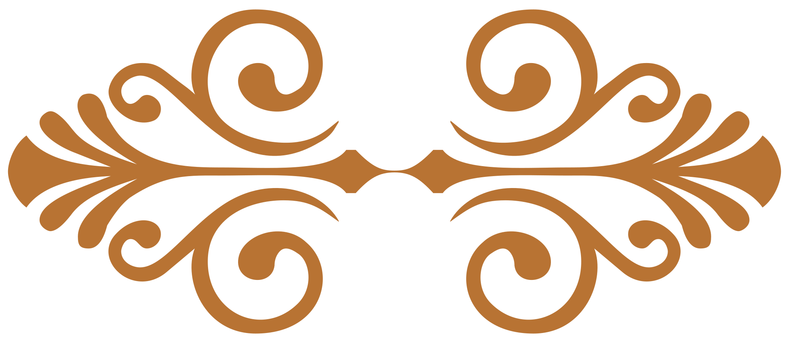

Travel back in musical history with the Golden Earrings Jazz Band!


Step into the 1920s, '30s and '40s by listening (and dancing!) to a duo of multi-instrumentalists who truly live and breathe that era's music. Golden Earrings Jazz Band plays favorites by the likes of Josephine Baker, Mamie Smith, Connie Boswell, Fats Waller, Sophie Tucker, Edith Piaf, and Sidney Bechet. From New Orleans standards to French chanson, we've got what you need to feel like you're living in another time — and we love to throw in a few country and Latin favorites as well.
The core of Golden Earrings Jazz Band is an engaging and versatile duo: Kevin "Muscle Mouth" Buster on saxophone, guitar, and foot percussion; and Robin Kallsen on vocals and upright bass. Together, they create an authentic sound that one would expect from a much larger ensemble.
Want an even bigger sound? We can add more musicians!
UPCOMING EVENTS
July 12th at the Traveling Goat, 7-9pm (Wednesday)- August 8th at The Traveling Goat, 7-9pm (Tuesday)
PAST EVENTS
Edmonds Jazz Walk, 2023- "Celebrate The Market" Spring Fundraiser, 2023
- The Traveling Goat, 2022 & 2023
LISTEN
(Fain/Magidson/Siegel, 1932)
(Brown/Homer/Green, 1944)
(Young/Evans/Livingston, 1947)
(David/Hoffman/Livingston, 1950)
You can get the full-length version of these recordings by purchasing a hard copy of our CD at any of our gigs (or if you happen to catch us out busking somewhere)!
WATCH
Follow us on social media or have us play at your event!
For booking: goldenearringsjazz@gmail.com